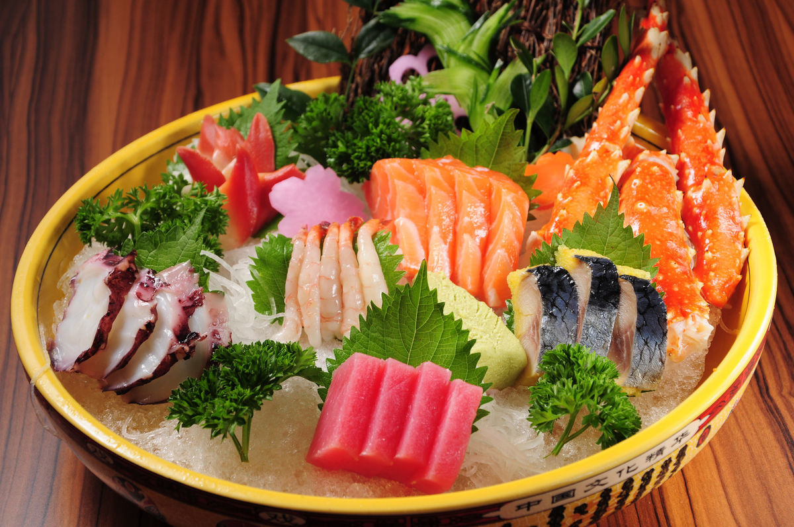
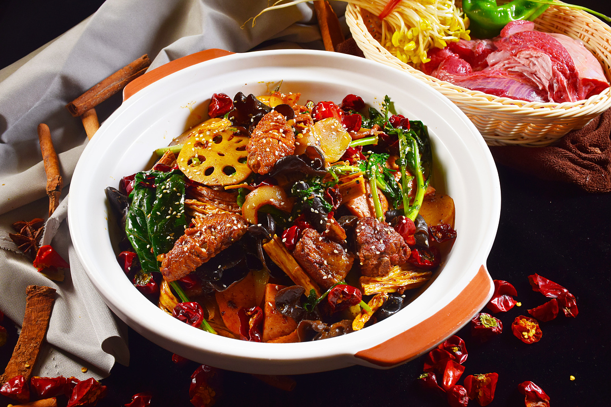
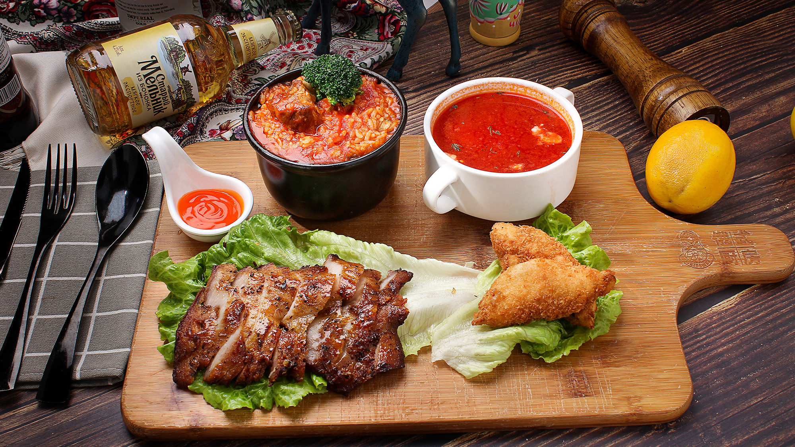
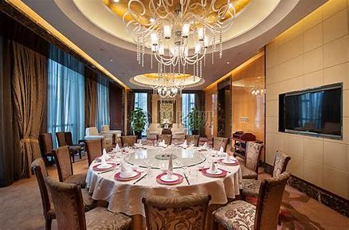
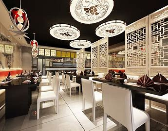
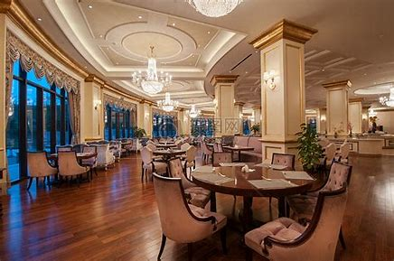
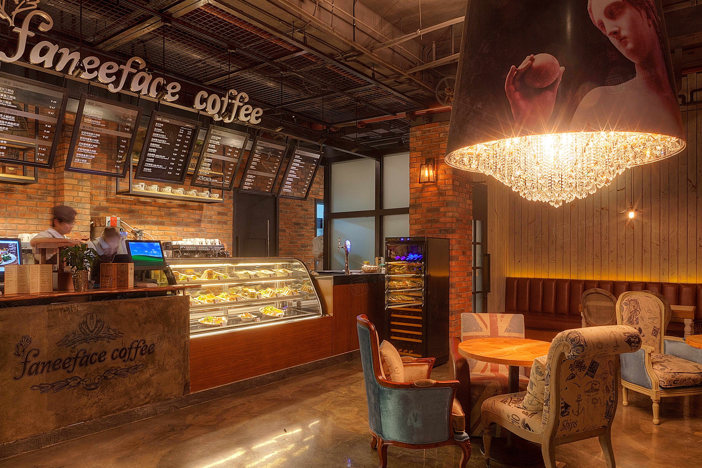
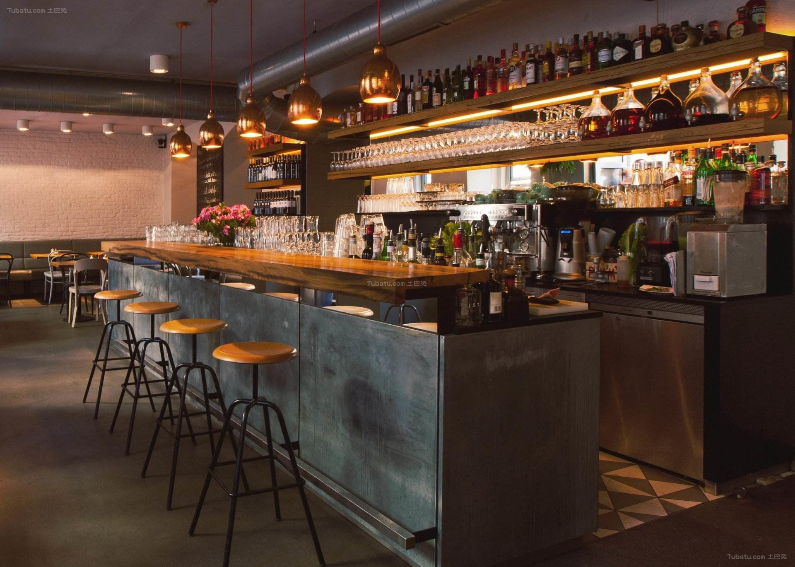

Restaurants
Japanese restaurant
Japanese cuisine is very particular about maintaining the original taste of food, and does not recommend adding too many spices, focusing on lightness. In particular, there are high requirements for the color of dishes, not only the use of a variety of very delicate containers to hold food, but also the shape, arrangement, color matching of food are also very delicate. Looking at the Japanese cuisine that is as fine as a landscape, first-time visitors often can't bear to spoil the beauty.

Chinese restaurant
Chinese cuisine pays attention to color and aroma, and generally gives people a desire to eat very much. When you eat Chinese food in your first bite, you will be attracted by its taste, and the taste of the dish is enough to run through your taste buds. A dish that makes you feel the real smell of fireworks.

Western restaurant
Rich in materials, exquisite in materials: As far as cooking is concerned, Western food is quite rich in ingredients, and its raw materials can be described as quite a lot, such as foie gras, fruits and vegetables, game, cereals, Western food are rich in materials, and they are also very particular when using materials. These are the specialties of Western food.


Cafe
In this quiet environment, you can chat with friends, exchange academic exchanges, drink coffee, and spend melodious afternoons one after another.

Bar
Experience the best of both worlds when it comes down to selecting an appetizing dish or a signature cocktail from our menu. Our onsite restaurant offers incredible dishes but also our bar serves amazing drinks!